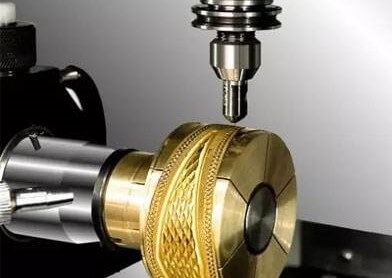

Inside Our Atelier




Each with decades of experience—master goldsmiths, gem-setters, engravers, and polishers—all dedicated to perfection.
Equipped with both traditional benches and CNC-aided workstations, blending heritage techniques with modern precision.
Dedicated prototyping lab for new 10 & 14 ct collections, rapid iteration, and material testing under one roof.
Every finished piece undergoes our seven-point inspection—density tests, gemstone certification, and finish verification—before delivery.
Comprehensive medical, dental, and vision coverage—plus on-site wellness checkups and mental-health support.
Competitive paid time off, national holidays, and yearly sabbaticals to recharge and return inspired.
Adjustable benches, precision lighting, and climate control designed to maximize comfort and prevent fatigue.
Ongoing training stipends, CAD/CAM certification courses, and cross-discipline apprenticeships to foster career growth.
Nutritious, chef-curated meals and snacks—catering to diverse diets and designed to fuel long, creative days.
Monthly yoga classes, team picnics, and a fully-equipped indoor rec room (pool, table tennis, chill lounge).
A landscaped courtyard featuring cricket, basketball hoops, lawn games, and shaded seating—perfect for breaks, team-building, and fresh-air brainstorming.
Subsidized transportation or company shuttles, plus assistance finding quality, nearby housing.
Rigorous OSHA-style safety protocols, regular drills, and personal protective equipment at every station.
Guided by the Jain principle of “ānanda” (wholeness), we cultivate a culture of non-violence, mindfulness, and compassion—integrated into daily routines and communal spaces to support your holistic well-being.